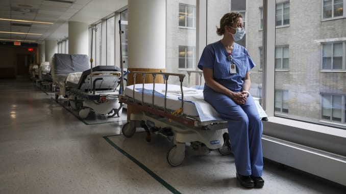

2020/04/27 星期一
今日無新增病例，累計290人解除隔離
中央流行疫情指揮中心今(27)日表示，國內今日無新增個案；昨(26)日新增498例新型冠狀病毒肺炎相關通報，截至目前累計通報60,956例(含59,269例排除)，其中429例確診，分別為343例境外移入，55例本土病例及31例敦睦艦隊。確診個案中6人死亡，290人解除隔離，其餘持續住院隔離中。
2020/04/26 星期日
今日無新增病例，累計281人解除隔離
中央流行疫情指揮中心今(27)日表示，國內今日無新增個案；昨(26)日新增498例新型冠狀病毒肺炎相關通報，截至目前累計通報60,956例(含59,269例排除)，其中429例確診，分別為343例境外移入，55例本土病例及31例敦睦艦隊。確診個案中6人死亡，290人解除隔離，其餘持續住院隔離中。
2020/04/25 星期六
為奔喪或探視，居家隔離/檢疫者可有條件外出
中央流行疫情指揮中心今(25)日表示，部分居家隔離/檢疫者因二親等親屬身故或重病等社會緊急需求，需外出奔喪或探視，基於人道考量，開放上述條件的民眾向所在地方衛生局提出外出申請。
2020/04/24 星期五
國內累計429人確診，275人解除隔離
中央流行疫情指揮中心今(25)日表示，昨(24)日新增833例新型冠狀病毒肺炎相關通報，截至目前累計59,840例(含57,440例排除)，其中429例確診(今日新增案429)，分別為343例境外移入，55例本土病例及31例敦睦艦隊。確診個案中6人死亡，275人解除隔離，其餘持續住院隔離中。4月20日及21日定點返台專案航班共460名湖北返台民眾，截至目前維持4人就醫治療中、2人陪同就醫，其餘持續於集中檢疫所密切健康監測。
2020/04/24 星期五
新增1例確診，為敦睦艦隊磐石艦實習生
中央流行疫情指揮中心今(25)日公布國內新增1例COVID-19(武漢肺炎)病例，為20多歲男性，為敦睦艦隊(磐石艦)實習生。個案4月18日至集中檢疫所隔離採檢，一採結果陰性，因血中抗體陽性，於4月24日進行二採，並於今日下午1點半確診，相關資料刻正疫調中。